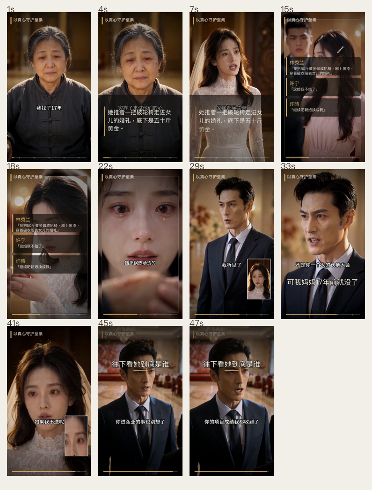
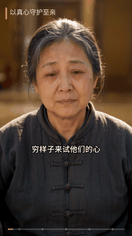

一句话结论：三处都改完并跑通了。整屏深色页面没有了，改成半透明浮层，原剧画面全程可见；卡片全部做成淡入／上滑／逐条出现／淡出的动效，不再"啪"地弹一页；图层上的制作术语和幕结构词全删，换成剧里本来就有的钩子句、人物台词和悬念收尾——一句没手写，全部从剧集包自动取。进度条按你说的留着，但改成纯图形刻度，上面一个字都没有。
| v1（上一版） | v2（这一版） |
|---|---|
| 整屏深色不透明底板，画面全被盖住 | 局部渐变遮罩 + 半透明浮层，原剧画面继续可见 |
| 居中大标题、圆角框、圆形节点连线的关系图 | 左对齐、竖金线、描边大字；人物改成三条名片（名字 + 这个角色的一句台词） |
| 静态整页，到点硬切进来、硬切走 | 淡入 0.7 秒 → 停留 → 淡出，文字逐行、名片逐条错峰浮现 |
| 顶部标题 + 底部图例说明，像汇报页 | 没有标题、没有图例，只有给观众看的内容本身 |

你问的"能不能生成动态 GIF 渲染进视频"，这里有个技术取舍，如实说：
动效确实做了，而且导出了 4 个 GIF，可以直接在浏览器或微信里打开看。但真正叠进视频的不是 GIF 文件，而是同一套动效渲染出的带半透明通道的 PNG 帧序列（1152 帧）。原因很实在：GIF 只有 256 色，透明只有"全透 / 全不透"两档，半透明浮层叠到视频上会出色带和锯齿边缘；PNG 帧序列带完整透明通道，叠上去干净。工程上做视频合成都用后者，GIF 是给人和甲方预览用的。
一句话：GIF 是"看效果"，帧序列是"进片子"，两者是同一份动效的两种输出。

四个 GIF 都叠了真实画面做底，所以看到的就是叠进片子之后的样子。
你定的原则是"信息是给观众看的"。据此把图层上的制作术语、幕结构、数据来源说明全部删掉，换成剧集包里现成的观众向文案。下面这些字一句都没手写，全从包里自动取。
| 位置 | 删掉的（给制作方看的） | 换成（给观众看的） | 数据从哪来 |
|---|---|---|---|
| 角标副行 | 剧情解读 · 画面编排验证 | （整行删掉，只留剧名） | drama_facts.title |
| 进度条 | 剧情进度 / 1认 2逼 3抢 4露 5揭 | 纯图形五段刻度，一个字不留 | 按段序自动算比例 |
| 章节卡 | 第 1 幕 / 认 / 第 1–4 集 / 章节名取自 story_arc.acts | 她推着一把破轮椅走进女儿的婚礼，底下是五十斤黄金。 | hook_map[0].opening_lines[0] |
| 人物关系图 | 人物关系 / 谁站哪一边 / 主角 对立面 配角 / 母女（金线）周家（红线） / 本图文字取自剧集包 characters 字段 | 林秀兰「我把50斤黄金做成轮椅…」 许宁「这婚我不结了」 许晴「继续吧新娘换成我」 | characters[].name + evidence.quote |
| 金句花字 | 第 1 集 · 原剧台词 | 可我妈妈17年前就没了 | elements.golden_quotes[1].quote |
| 片尾落版 | 画面编排验证版 / 编排 · 图层 · 统一视觉参数 / 本片仅用于效果验证 | 往下看她到底是谁 | elements.ctas[0].text |
| 时间 | 镜头 | 画面处理 | 浮层动效 |
|---|---|---|---|
| 0–12 秒 | 老太太特写 | A3 统一调色 + 角标 + 进度条 | 2.5 秒起，悬念句渐入、逐行浮现、淡出 |
| 12–24 秒 | 双人前后景 | A1 画中画 + A3 | 2.5 秒起，三条人物名片从右逐条滑入 |
| 24–36 秒 | 新娘 + 轮椅 | A3 + "另一个人"辅助窗（4–9 秒） | 5.5 秒起，金句描边大字淡入 |
| 36–48 秒 | 新郎 | A3 + 细节放大窗（3–8 秒） | 8 秒起，收尾悬念浮在上半部 |
这两处是抽帧复核时发现的，改完重跑了一遍，报告里的图和视频都是修复后的版本。
asset_index.json，这轮继续留空，没编数据。